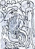

| kunst i dunst | ||
| Her samles alle de begivenheder, happenings, udstillinger,
demonstrationer, performances osv. som planlægges på dunst aktivist-møderne. Hvis du har nogle idéer eller bare vil være med, så kontakt os på info(a)dunst.dk Her vises nolge udvalgte: |
||
|
kunst i dunst  |
|
|